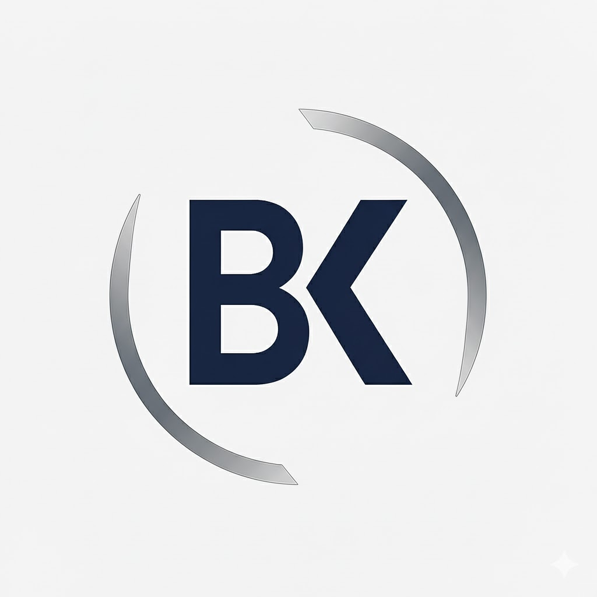
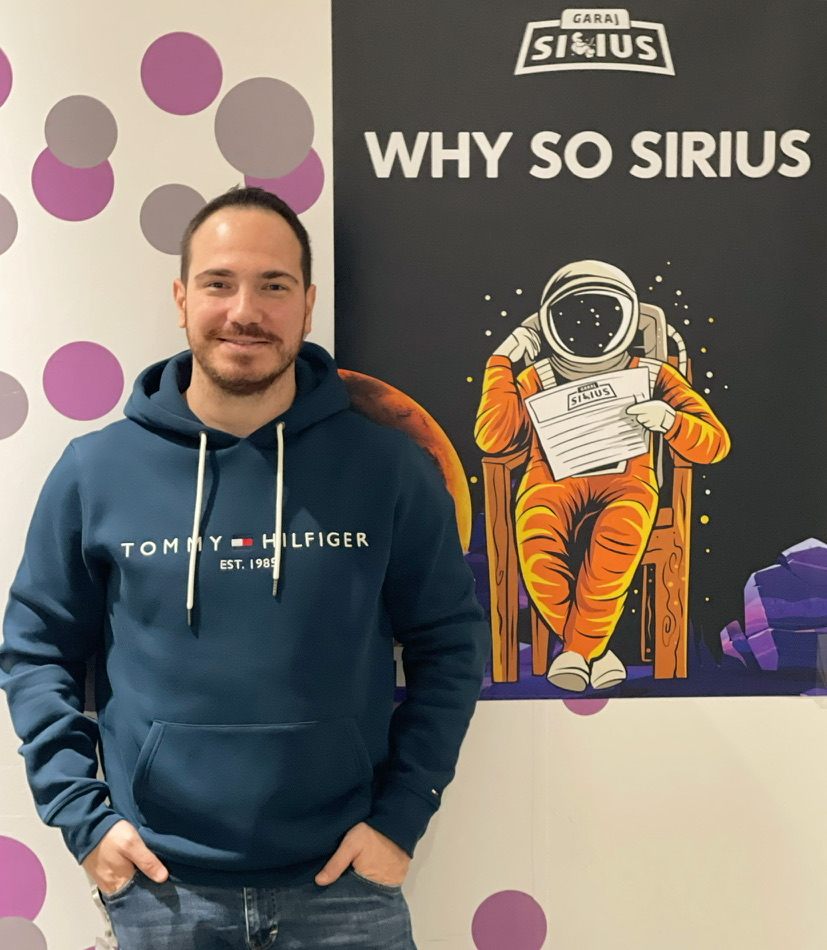

<!doctype html>
<html lang="tr">
  <head>
    <meta charset="utf-8" />
    <meta name="viewport" content="width=device-width,initial-scale=1" />
    <title>Burak Karaca</title>

    <!-- Tailwind (Play CDN) -->
    <script src="https://cdn.tailwindcss.com"></script>

    <!-- Babel: JSX'i tarayıcıda derlemek için -->
    <script src="https://unpkg.com/@babel/standalone/babel.min.js"></script>

    <style>
      :root{
        --text:#1A2C3A;      /* petrol / lacivert ton */
        --border:#D6E2E8;    /* sabit border rengi */
      }
      html, body { height: 100%; }
      body {
        margin: 0;
        color: var(--text);
        background: linear-gradient(to bottom, #FFFFFF 0%, #F3F4F6 50%, #E5E7EB 100%);
        font-family: ui-sans-serif, system-ui, -apple-system, Segoe UI, Roboto, Helvetica, Arial, "Apple Color Emoji", "Segoe UI Emoji";
      }
      .link:hover { color:#2C5F6C }
      .card      { border:1px solid var(--border); border-radius:1rem; padding:1.25rem; }
      .underline-title { border-bottom:1px solid var(--border); padding-bottom:0.5rem; }
      /* ikon butonları için küçük rahatlık */
      .iconbtn { padding:0.5rem; display:inline-flex; align-items:center; justify-content:center; }
      .iconbtn:hover { color:#2C5F6C; }
      /* img kenarlığı sabit */
      .imgborder { border:1px solid var(--border); border-radius:0.75rem; }
      a { text-decoration: none; }
    </style>
  </head>
  <body>
    <div id="root"></div>

    <!-- UMD React -->
    <script src="https://unpkg.com/react@18/umd/react.production.min.js"></script>
    <script src="https://unpkg.com/react-dom@18/umd/react-dom.production.min.js"></script>

    <!-- Uygulama -->
    <script type="text/babel">
      const { useEffect, useMemo, useState } = React;

      // Basit hash router: #/, #/hakkimda, #/yazilar, #/yazilar/<id>
      const parseHash = () => {
        const raw = location.hash.replace(/^#\\/?/, "");
        if (!raw) return { page:"home" };
        const parts = raw.split("/").filter(Boolean);
        if (parts[0]==="hakkimda") return { page:"hakkimda" };
        if (parts[0]==="yazilar" && parts[1]) return { page:"post", id:parts[1] };
        if (parts[0]==="yazilar") return { page:"yazilar" };
        return { page:"home" };
      };

      const POSTS = [
        { id:"biyometrik-onay-yonetimi", title:"Biyometrik Onay Süreçlerinde Merkezî Yönetim", excerpt:"Kullanıcı onaylarının sürdürülebilir yönetimi ve deneyim sadeleştirmesi.", date:"2025-02-01", content:"Bu yazıda biyometrik onay akışlarının merkezî yönetimi, mevzuat uyumu ve deneyim etkisini ele alıyorum. Modüler onay servisleri, audit izleri ve uçtan uca ölçümleme ile sürdürülebilirlik sağlanabilir." },
        { id:"mikro-etkiler-buyuk-sonuclar", title:"Mobil Bankacılıkta Mikro Etkiler, Büyük Sonuçlar", excerpt:"Küçük optimizasyonların kullanıcı davranışına etkisini inceliyoruz.", date:"2025-01-20", content:"Mikro metrikler: TAP, TTI, boşta kalma süreleri ve hata oranları. Küçük iyileştirmelerin dönüşüm ve memnuniyete etkisine örnek vaka çalışmaları paylaşıyorum." },
        { id:"veri-odakli-analist", title:"Veri Odaklı Karar Alma ve Analist Rolü", excerpt:"Hızlı kararlar için doğru veri mimarisinin önemi.", date:"2024-12-30", content:"Ürün kararlarında deney tasarımı, event şeması ve observability. Analistin köprü rolü ve veri okuryazarlığı kültürü üzerine pratik öneriler." },
        // İleride buraya yeni yazılar eklersin
      ];

      function App(){
        const [route, setRoute] = useState(parseHash());
        useEffect(()=>{
          const h = () => setRoute(parseHash());
          window.addEventListener("hashchange", h);
          // ilk yükleme
          setRoute(parseHash());
          return ()=>window.removeEventListener("hashchange", h);
        },[]);

        const go = (hash)=>{ location.hash = hash; };

        const activePost = useMemo(()=>{
          if(route.page==="post"){
            return POSTS.find(p=>p.id===route.id) || null;
          }
          return null;
        },[route]);

        // ortak başlık sınıfı
        const titleCls = "text-2xl font-semibold mb-6 underline-title";

        return (
          <div className="min-h-screen flex flex-col">
            {/* HEADER */}
            <header className="flex justify-between items-center px-6 py-4 border-b" style={{borderColor:"var(--border)"}}>
              <div className="flex items-center gap-3">
                {/* LOGO: kök klasöre 'logo.png' yükle (başına / koyma) */}
                
                <h1 className="text-lg font-semibold">Burak Karaca</h1>
              </div>
              <nav className="flex gap-6 text-sm">
                <a href="#/" className={`link ${route.page==="home" ? "text-[#2C5F6C]" : ""}`}>Anasayfa</a>
                <a href="#/hakkimda" className={`link ${route.page==="hakkimda" ? "text-[#2C5F6C]" : ""}`}>Hakkımda</a>
                <a href="#/yazilar" className={`link ${(route.page==="yazilar" || route.page==="post") ? "text-[#2C5F6C]" : ""}`}>Yazılar</a>
              </nav>
            </header>

            {/* ROUTES */}
            {route.page==="home" && (
              <>
                <section className="flex flex-col items-center justify-center text-center py-16 px-6">
                  <h2 className="text-3xl md:text-4xl font-bold mb-4">Analiz ve Mobil Deneyim Üzerine Yazıyorum.</h2>
                  <p className="max-w-2xl leading-relaxed">
                    Intertech’te Architect Business Analyst olarak; mobil bankacılık, süreç optimizasyonu ve kullanıcı deneyimi üzerine içerikler paylaşıyorum.
                  </p>
                  <div className="flex gap-4 mt-8">
                    <a className="iconbtn" href="https://x.com/brkkaraca" target="_blank" rel="noopener noreferrer" title="X">
                      <!-- X -->
                      <svg width="18" height="18" viewBox="0 0 24 24" fill="none" stroke="currentColor"><path d="M18 2H15L6 22H9L18 2Z"/><path d="M2 2L22 22"/></svg>
                    </a>
                    <a className="iconbtn" href="https://linkedin.com/in/burakkaraca" target="_blank" rel="noopener noreferrer" title="LinkedIn">
                      <!-- LinkedIn -->
                      <svg width="18" height="18" viewBox="0 0 24 24" fill="currentColor"><path d="M4.98 3.5C4.98 4.88 3.86 6 2.48 6 1.1 6 0 4.88 0 3.5 0 2.12 1.1 1 2.48 1c1.38 0 2.5 1.12 2.5 2.5zM0 8h5v16H0zM7.5 8h4.8v2.2h.1c.7-1.2 2.4-2.4 4.9-2.4 5.2 0 6.1 3.4 6.1 7.7V24h-5V16c0-1.9 0-4.3-2.6-4.3-2.6 0-3 2-3 4.1V24h-5z"/></svg>
                    </a>
                    <a className="iconbtn" href="https://github.com/brkkaraca" target="_blank" rel="noopener noreferrer" title="GitHub">
                      <!-- GitHub -->
                      <svg width="18" height="18" viewBox="0 0 24 24" fill="currentColor"><path d="M12 .5C5.73.5.99 5.24.99 11.5c0 4.85 3.15 8.96 7.51 10.41.55.1.75-.24.75-.53 0-.26-.01-1.13-.02-2.05-3.05.66-3.69-1.29-3.69-1.29-.5-1.26-1.23-1.6-1.23-1.6-1-.69.08-.68.08-.68 1.1.08 1.68 1.13 1.68 1.13.98 1.67 2.58 1.19 3.21.91.1-.71.38-1.19.69-1.46-2.43-.28-4.98-1.22-4.98-5.42 0-1.2.42-2.17 1.11-2.94-.11-.28-.48-1.41.1-2.94 0 0 .9-.29 2.95 1.12A10.2 10.2 0 0 1 12 6.8c.91 0 1.82.12 2.67.34 2.05-1.41 2.95-1.12 2.95-1.12.58 1.53.21 2.66.1 2.94.69.77 1.11 1.74 1.11 2.94 0 4.21-2.55 5.13-4.99 5.41.39.34.74 1.01.74 2.03 0 1.47-.01 2.65-.01 3.01 0 .29.2.63.76.52A10.99 10.99 0 0 0 23 11.5C23 5.24 18.27.5 12 .5Z"/></svg>
                    </a>
                    <a className="iconbtn" href="https://instagram.com/burakkaraca" target="_blank" rel="noopener noreferrer" title="Instagram">
                      <!-- Instagram -->
                      <svg width="18" height="18" viewBox="0 0 24 24" fill="currentColor"><path d="M7 2h10a5 5 0 0 1 5 5v10a5 5 0 0 1-5 5H7a5 5 0 0 1-5-5V7a5 5 0 0 1 5-5zm0 2a3 3 0 0 0-3 3v10a3 3 0 0 0 3 3h10a3 3 0 0 0 3-3V7a3 3 0 0 0-3-3H7zm5 3.5a5.5 5.5 0 1 1 0 11 5.5 5.5 0 0 1 0-11zm6-1.25a1.25 1.25 0 1 1 0 2.5 1.25 1.25 0 0 1 0-2.5z"/></svg>
                    </a>
                    <a className="iconbtn" href="mailto:burak@burakkaraca.com.tr" title="E-posta">
                      <!-- Mail -->
                      <svg width="18" height="18" viewBox="0 0 24 24" fill="none" stroke="currentColor"><path d="M4 4h16v16H4z"/><path d="m22 6-10 7L2 6"/></svg>
                    </a>
                  </div>
                </section>

                <section className="max-w-3xl mx-auto px-6 py-10 w-full">
                  <h3 className={`${titleCls}`}>Son Yazılar</h3>
                  <div className="space-y-6">
                    {POSTS.slice(0,3).map(p=>(
                      <a key={p.id} href={`#/yazilar/${p.id}`} className="block card link">
                        <h4 className="font-semibold text-lg">{p.title}</h4>
                        <p className="text-sm mt-2">{p.excerpt}</p>
                      </a>
                    ))}
                  </div>
                </section>
              </>
            )}

            {route.page==="yazilar" && (
              <section className="max-w-3xl mx-auto px-6 py-12 w-full">
                <h3 className={`${titleCls}`}>Yazılar</h3>
                <div className="space-y-6">
                  {POSTS.map(p=>(
                    <a key={p.id} href={`#/yazilar/${p.id}`} className="block card link">
                      <div className="text-xs opacity-70 mb-1">{p.date}</div>
                      <div className="font-semibold text-lg">{p.title}</div>
                      <div className="text-sm mt-2">{p.excerpt}</div>
                    </a>
                  ))}
                </div>
              </section>
            )}

            {route.page==="post" && activePost && (
              <article className="max-w-3xl mx-auto px-6 py-12 w-full">
                <a href="#/yazilar" className="mb-6 inline-block text-sm underline link">← Tüm yazılar</a>
                <h1 className="text-3xl font-bold mb-2">{activePost.title}</h1>
                <div className="text-xs opacity-70 mb-6">{activePost.date}</div>
                <div className="max-w-none"><p>{activePost.content}</p></div>
              </article>
            )}

            {route.page==="hakkimda" && (
              <section className="max-w-3xl mx-auto px-6 py-12 w-full">
                <h3 className={`${titleCls}`}>Hakkımda</h3>
                <div className="flex gap-6 items-start card">
                  <!-- FOTO: kök klasöre 'profile.jpg' yükle -->
                  
                  <div className="space-y-4 text-sm leading-relaxed">
                    <p>15 yılı aşkın iş deneyimimle, farklı sektörlerde kazandığım bilgi ve becerilerle Intertech’te Mimar İş Analisti olarak görev alıyorum. Analitik düşünme yeteneğim, hızlı öğrenme kabiliyetim ve problem çözme becerimle iş süreçlerinde katma değer sağlayan projelerde kilit roller üstleniyorum. Farklı perspektiflerden yaklaşarak iş süreçlerini optimize ediyor ve değer odaklı çözümler geliştiriyorum.</p>
                    <p>DenizBank’taki kariyerime şube operasyonlarında başladım ve 2021 yılında Bilgi Teknolojileri alanına geçiş yaparak bu alanda uzmanlaştım. Bu süreç, teknolojik yenilikleri hızla benimseme ve iş hedefleri doğrultusunda stratejik çözümler geliştirme yetkinliğimi pekiştirdi. MobilDeniz projelerinde kullanıcı ihtiyaçlarını analiz ederken, uygulama performansı ve güvenliğini artırmaya yönelik kritik tespitler ve öneriler sundum.</p>
                    <p>Farklı bakış açıları geliştirerek karmaşık problemleri çözme, yenilikçi çözümler üretme ve iş süreçlerini optimize etme konularında yetkinlik kazandım. Stratejik düşünme ve karar alma süreçlerinde etkin rol üstlenerek, liderlik becerilerimle ekipleri yönlendirme ve iş hedefleri doğrultusunda çözümler geliştirme konularında deneyim sahibiyim. Hızlı öğrenme kabiliyetim sayesinde değişen teknoloji ve iş modellerine hızla adapte oluyor, etkili iletişim becerilerim sayesinde ekip içi uyumu ve paydaş iş birliklerini güçlendiriyorum.</p>
                    <p>Yaptığım her işi sadece “tamamlamak” için değil, daha iyisini mümkün kılmak için yapıyorum. Bu yaklaşımla, kendi değerimi ortaya koyarak; analitik bakış açımı ve çözüm odaklı duruşumu hem insanlara hem de iş süreçlerine değer katacak şekilde kullanarak, danışmanlık ve ekip yönetimi gibi alanlarda daha fazla sorumluluk almayı hedefliyorum. Stratejik katkı sağlayan, yön gösteren ve fark yaratan bir liderliğe doğru ilerliyorum. Bu yaklaşımı bir unvandan ziyade bir sorumluluk olarak görüyor ve her koşulda etki yaratmaya odaklanıyorum.</p>
                  </div>
                </div>
              </section>
            )}

            {/* FOOTER */}
            <footer className="mt-auto border-t px-6 py-6 text-sm" style={{borderColor:"var(--border)"}}>
              <div className="max-w-3xl mx-auto flex flex-col md:flex-row justify-between items-center w-full">
                <p>© 2025 Burak Karaca</p>
                <a href="mailto:burak@burakkaraca.com.tr" className="link mt-2 md:mt-0">burak@burakkaraca.com.tr</a>
              </div>
            </footer>
          </div>
        );
      }

      ReactDOM.createRoot(document.getElementById("root")).render(<App/>);
    </script>
  </body>
</html>
